Марк Шагал. Автопортрет на фоне неба
«В живописи есть только один цвет – цвет любви…» М. Шагал
Автор: Лилия Ратнер
В бурлящем котле новых стилей и языков, в ниспровержении всех идеалов, в среде развоплошений – словом, в искусстве ХХ века одиноко высится необычайная и громадная фигура Марка Шагала.
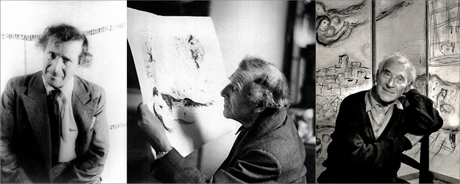
Этот цветок любви расцвел сразу и мощно. Корни его уходят не куда-нибудь, а в российскую землю, уже сотрясаемую революционными предчувствиями, истощенную войной. Мало того, в скудную землю черты оседлости. Нищета и теснота еврейского местечка, где Библия и Пророки мешались с убогим бытом и, одновременно, удивительно сочетались! Анавим – бедные, малые – они всегда ближе к Богу. Хедер, синагога, шабат, чтение и толкование Торы так легко перетекали в бедняцкий быт и обратно!
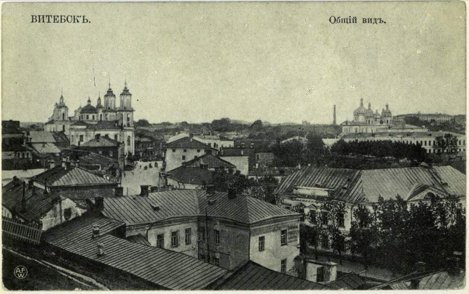
Шагал оставил нам свою автобиографию. Она начинается с первых воспоминаний о детстве – 1880-1890-е годы – и заканчивается 1922 годом – окончательным отъездом из России. Его детство предстает счастливым и почти безмятежным, несмотря на бедность родителей и все «прелести жизни» в черте оседлости. Радость бытия и удивительная чистота заливают страницы его книги. Именно там, в бедном еврейском местечке, он получил от Бога разрешение стать художником, несмотря на запрет изображений. Ответ был дан на молитву юного Шагала: «Господи, Ты прячешься в облаках или за домом Сапожника, сделай так, чтобы проявилась моя душа, бедная душа заикающегося мальчишки. Яви мне мой путь. Я не хочу быть похожим на других, я хочу видеть мир по-своему. И в ответ город лопался, как скрипичная струна, а люди, покинув обычные места, принимались ходить над землей. Мои знакомые присаживались отдохнуть на кровли», — пишет он в своей книге «Моя жизнь».
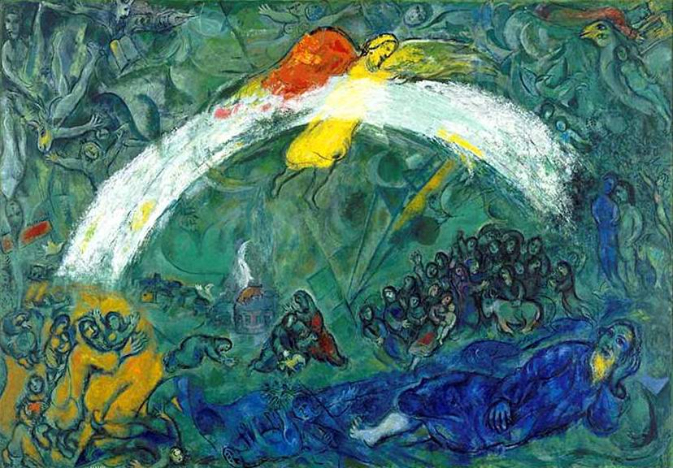
Христос говорил притчами. Притча – жанр удивительный. Она бесконечно земна – в ней живет весь бедняцкий местечковый быт с его селедками, стоптанными сапогами, чадящими керосиновыми лампами. Но она же и бесконечно возвышенна, парадоксальна, небесна. Иудеи всегда говорили притчами, а в начале ХХ века Марк Шагал принес их в изобразительное искусство, «смешав банальность видимого и парадоксальность неизреченного» [1]. Как всякий еврей, воспитанный на Торе и Талмуде, он шел в своем искусстве от слова. Именно слово давало ему «свободу обращения с пространством и временем» [2]. Слово было для него «эквивалентом человеческого духа» [3]. Мир вообще понимается Шагалом как божественное Слово и как текст. Иудеи чувствовали бесконечную удаленность Бога от человека и бесконечную близость к Нему.
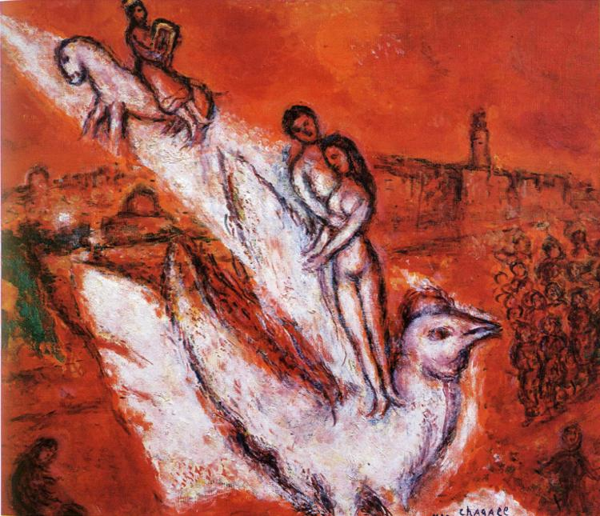
В своей жизни и своем творчестве Шагал скиталец, как и его народ, совершивший уже в Библии несколько исходов: исход Ноя в воды потопа, исход Авраама из Ура Халдейского, исход из Египта и, наконец, исход части народа из Ветхого Завета в Новый.
Ему присуще радостное восприятие жизни. В этом он истинный наследник верований хасидов. Хэсэд – любовь, милосердие; хасид – любящий Бога. Познать Бога, как учили хасиды, дано только «возликовавшей душе».
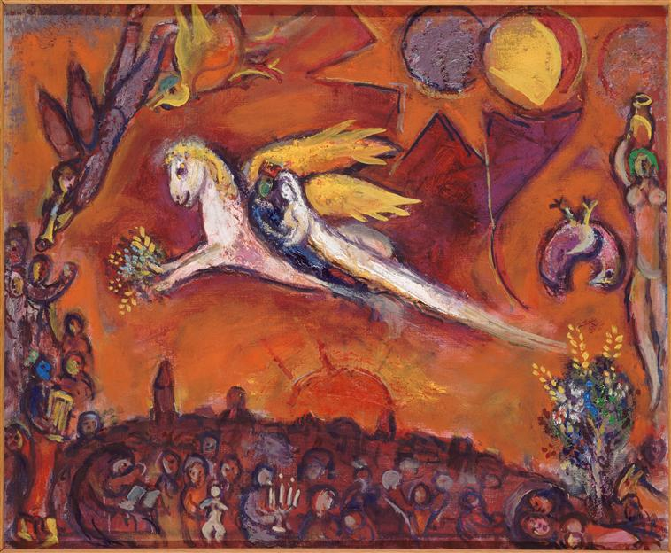
Запрет на изображение был преодолен художниками еще до Шагала (один предков художника в XVIII в. расписал синагогу), но только Шагал стал великим мастером внутри иудейской иконоборческой традиции. И это не противоречит ничему в иудаизме, который Вл. Соловьев формулирует как «веру в невидимое и одновременно желание, чтобы невидимое стало видимым, веру в дух, но только в такой, который проникает все материальное и пользуется материей, как своей оболочкой и орудием» [4]. А Вл. Зелинский считает, что «произведение искусства, вышедшее из рук человека, исполняется, когда ему удается уловить собою малый след присутствия Божия, оставленного повсюду и приносимого в каждой вещи» [5].
В наше время, когда сознание человека отказывается принимать мысль о смерти, когда Воскресение стало чем-то вроде красивой легенды, а несение креста, как аскеза вообще, — ненужным чудачеством, когда «плоть празднует свое освобождение» [6], в это время, когда «Черный квадрат» Малевича становится знаком культурной катастрофы, когда в искусстве ищут только развлечения, эротики и иронии, — появляется пророк поистине библейского масштаба, остро чувствующий свою избранность. Это ощущается уже в ранних его работах. В них он еще вполне в русле современного ему искусства, изыскан, чуть-чуть манерен. Но герои его уже взмывают в небеса, игнорируя черту оседлости! Почти сразу Шагал находит свой путь – обживание Неба, где он не может не встретить своих собратьев по крови и вере, учителей и отцов – библейских пророков. Их язык становится его языком, он теряет эстетичность, выражается чуть-чуть косноязычно, как Моисей. Но он берет с собой в Небо все, что составляет его быт на земле: избушки, коров, скрипачей, водовозов и прекрасных девушек.
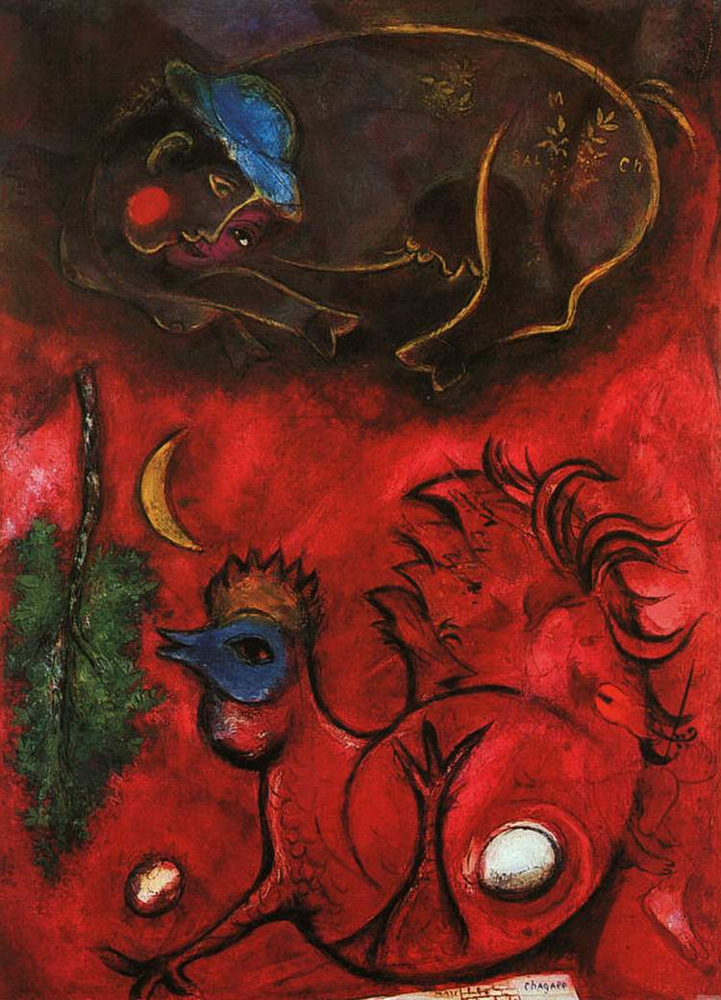
Он рано понимает, что будет писать не так, как все. «А как? Даст ли мне Бог … силу оживить картины моим собственным дыханием, вложить в них мою мольбу и тоску, мольбу о спасении, о возрождении?» Не многие художники в это время так молились, если молились вообще. Молитва рождается в душе юнца на окраине Витебска, на улице Покровской в семье рабочего из рыбной лавки. Отец будущего художника швырнул сыну все, что у него было, — двадцать семь рублей – и юный Шагал, преодолевая страх перед голодом, бездомностью, неизвестностью отправился в Петербург овладевать художественным мастерством. Он повез туда всю живую память о детстве, о своих еврейских родичах – дядях, тетях, дедушках и бабушках. Он увез свой талант, который, как он считал, весь таился в его матери. Он писал: «Если мое искусство не играло никакой роли в жизни моих родных, то их жизнь и их поступки … сильно повлияли на мое искусство» [7]. Удивительной чистотой и нежным грустным еврейским юмором проникнута его автобиографическая книга, как и все его творчество. И как важны эти слова: «Да простит мне Господь, если в эти строки я не смог вложить всю щемящую любовь, которую питаю ко всем людям на свете. А мои родные – самые святые из них» [8].
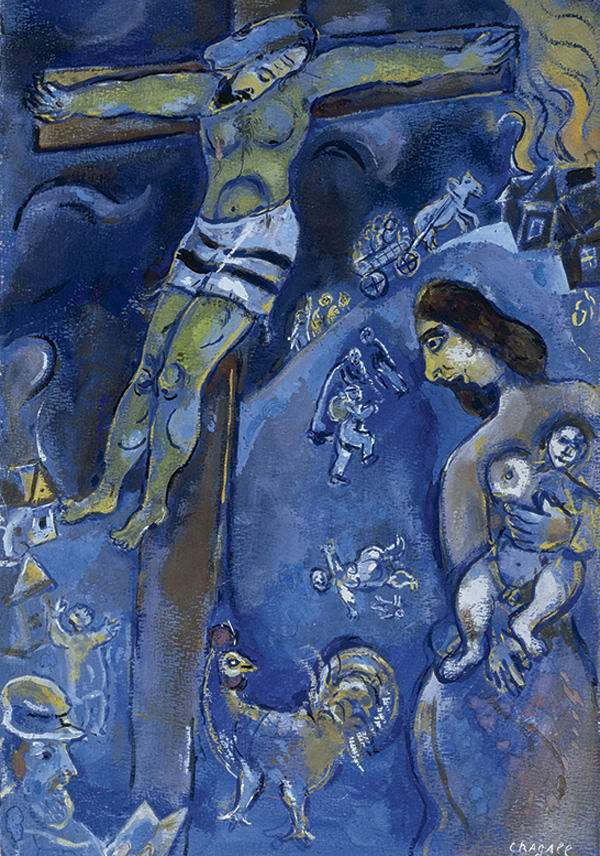
В Петербурге, продираясь сквозь нищету и голод, он пытается чему-нибудь выучиться и посещает то Школу Общества поощрения художеств, где директором был Рерих, то школу Бакста. Первая ничего ему не дала, вторая дал понять, что он должен забыть все, чему его учили раньше, хотя искусство Бакста было чуждо ему, как и все течение «Мира искусства», где царили стилизация, эстетизм, светскость и некоторая манерность. Правда, школа Бакста для юного Шагала, не имевшего представления о том, что такое Париж, олицетворяла Европу. В Париже его учителем стал Лувр. «Меня окружали там давно ушедшие друзья. Их молитвы сливались с моими. Их картины освещали мою младенческую физиономию. Я как прикованный стоял перед Рембрандтом, по многу раз возвращался к Шардену, Фуке, Жерико» [9]. Ему казалось, что «все мы робко ползаем по поверхности мира, не решаясь взрезать и перевернуть этот верхний пласт и окунуться в первозданный хаос. Нужен очистительный потоп, глубинная, а не поверхностная революция». Импрессионизм, кубизм, все новейшие течения, которыми бредил Париж, ему были равно чужды. «Этот прогресс формы – все равно, что пышное облачение римского Папы рядом с нагим Христом или богослужение в роскошном храме рядом с молитвой в чистом поле», — писал Шагал.
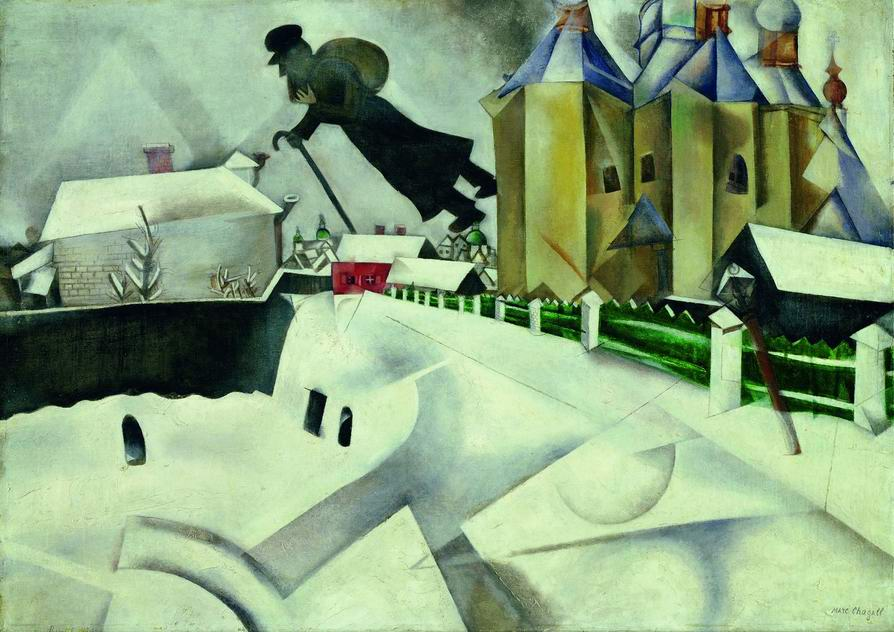
Тем не менее, он был принят во Франции и Германии.
А в Европе уже назревала и, наконец, грянула гроза. Началась кровавая драма, грандиозное и трагическое действо, в которое вовлеклись все народы. Шагала она застала в России, куда он приехал, думая, что ненадолго, на свадьбу своей сестры, а также, чтобы увидеть ЕЁ, ту, которая разделила с ним все превратности жизни, став и музой, и ангелом, и моделью: «С тех давних пор она, одетая в белое или черное, парит на моих картинах, озаряет мой путь в искусстве. Ни одной картины, ни одной гравюры я не заканчиваю, пока не услышу ее «да» или «нет»». Так он писал о Белле, ставшей его женой.
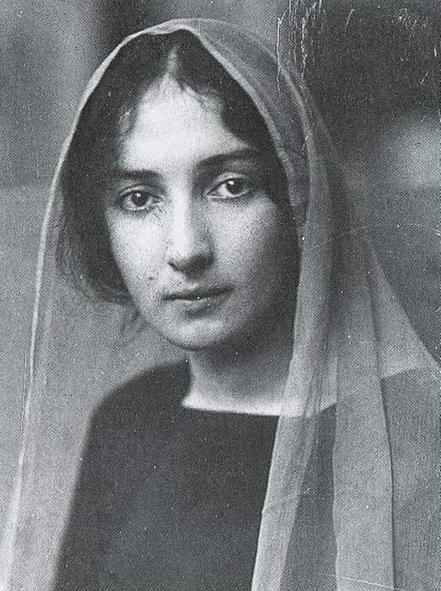
Счастливые месяцы в родном Витебске. Жадно вглядывается он во все детали привычного захолустья, пишет все, что попадается на глаза, как будто предчувствует разлуку навсегда и страшный конец, ждущий эти мирные лица. Витебск, наполняющий небо в парижских картинах, как бы опускается на землю. Быт, теплый и привычно родной, требует увековечения. Появляются портреты красных, зеленых стариков, раввинов, погруженных в молитву. Шехина, Божье присутствие, осеняет этот нищенский, готовый уйти в небытие мир. Вот «Ворота еврейского кладбища», пророчески и страшно приглашающе распахнутые прямо в небо. За ними грозовые всполохи, космическое пространство. Туда уйдут в ХХ веке миллионы его мирных собратьев по крови. Лучше всего он сам сказал об этих воротах:
«Врата – это распахнутые стены,
там громы отгремевшие ночуют
и молнии расщепленно трещат».
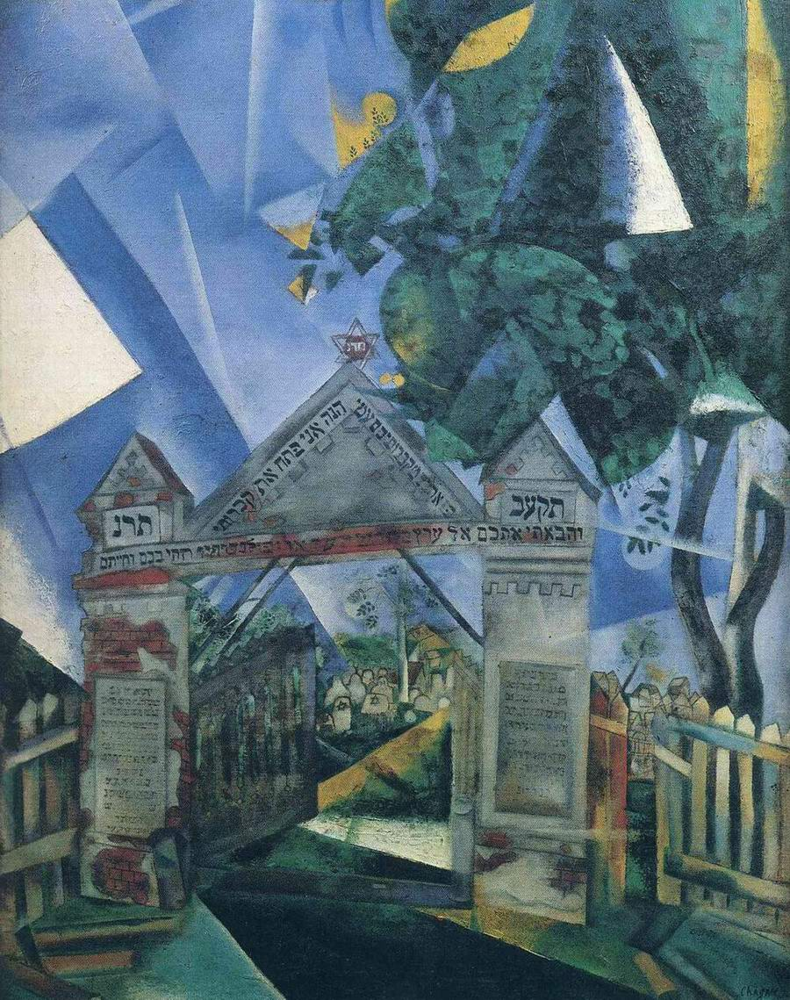
Вот трагическая фигура «Продавца газет», несущего печальные новости. За его спиной громадная церковь Ильи Пророка, и сам он кажется посланцем этого пророка. Но и счастливая любовь тоже есть в холстах этого периода. Она – олицетворение земной и небесной любви – «Песнь песней», дарованная мастеру. Его влюбленные взлетают над городом, парят над ним, как ангелы. Иногда это парение происходит в пространстве комнаты – в картине «С днем рождения», и городская комната, наполненная массой деталей быта, обретает символический смысл, наполняется Божиим присутствием.
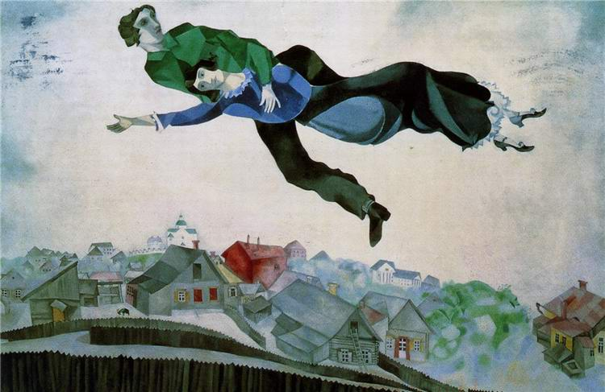
Но не только сила любви отрывает героев картин Шагала от земного притяжения. Он захвачен зрелищем русской революции, пишет статьи, занимается административной и педагогической деятельностью. Но принять материалистическую марксистскую идеологию он, конечно же, не может. Переехав сначала в Петроград, а затем в Москву, Шагал находит для себя новое поле творчества – театр, который необычайно близок ему стихией игры. Шагаловский театр сродни народному площадному действу. Одновременно он проникнут религиозным чувством и соединяет, как и все искусство Шагала, укорененность в быте и освященность этого быта Бытием. Для еврейского камерного театра Грановского он создает семь монументальных полотен, посвящая их темам творчества, синтеза искусств и любви, расписывает потолок и стены. Он расписывает своими сюжетами даже эскизы костюмов действующих лиц, так что они становятся как бы эскизами ролей. Так создается своего рода храм искусств. Но советской власти, как и царской России, где он чувствовал себя изгоем, Шагал был не нужен. Продолжая жить на родине, он рисковал не только потерять себя, свою душу, но и свободу, и жизнь. Страшно подумать, что ждало его, останься он в России. Бог вывел его, как когда-то евреев из Египетского рабства.
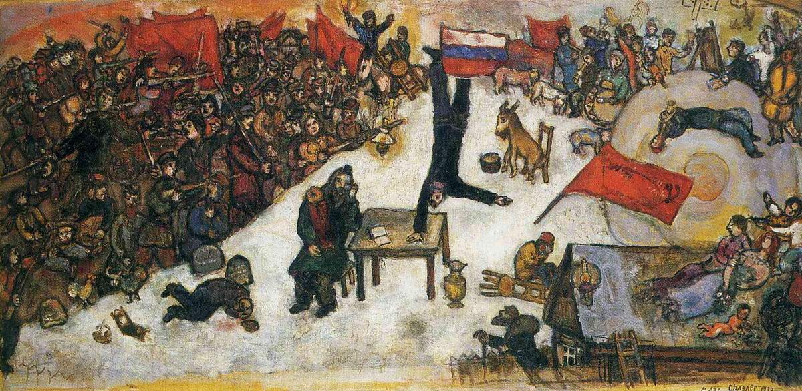
И вот он снова в Париже. Там в это время расцветает сюрреализм. Бретон, Бунюэль, Рене Клер взрывают традиционалистское сознание. А Шагал обращается к книге о России. Он описывает и увековечивает в ней целую галерею своих диковинных сородичей, о которых пишет с нежностью и любовью. И другая важнейшая книга о российской жизни становится своего рода его декларацией. «Мертвые души» Гоголя – его немытая Россия. Удивительное «пространство литографий открыто всем ветрам. В нем все летит, несется, пританцовывает – стулья, свечи, дороги, мужики и помещики» [10]. И вместе со всем этим танцует душа художника. Разлетаются небесные тела, комья грязи, живые и мертвые. Серия эта огромна, иллюстрации сделаны почти к каждой странице. «Словно он переводит Гоголя на язык своего искусства. Что такое «Мертвые души»? Явь или бред? Фиктивная купля-продажа не живых, но и не мертвых» [11].
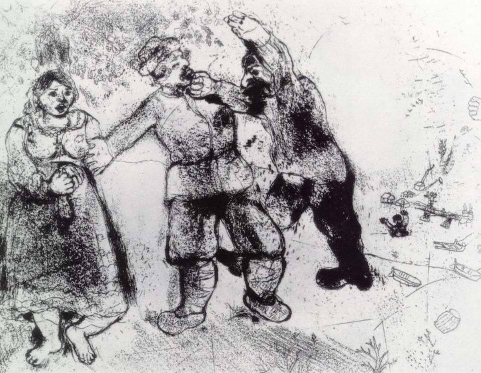
У каждого художника есть свой «первофеномен». Это то, что заложено в генах, что питает творчество, что толкает развиваться дальше. Общеизвестно, что у Шагала это Витебск, его малая родина, за которой простирается Родина большая. Но в этом первофеномене есть своя маленькая загадочная деталь, с поразительным постоянством кочующая из картины в картину, удивительное существо, кроткое и трогательное, не то корова, не то ослик. Откуда оно? Вот оно на картине «На берегах Сены» 1953 года, где юная женщина с младенцем позирует художнику, а над мостами Сены витает зеленая коровка с русалочьим хвостом. Вот она над «Невестой с синим лицом» (1932-1960 гг.), картиной, полной воспоминаний (тут и скрипач, и скоморох, и витебские домики). В «Автопортрете с напольными часами. Перед распятием» (1947 г.) красная корова уже alter ego художника. Она вырастает прямо из его фигуры. Оба они осенены летающими часами, как бы овеществленным временем. Присутствует это мистическое существо и в полотне «На двух берегах» (1943-1958 гг.), где зеленая коровья голова молитвенно обращена к небу. Она везде рядом с влюбленными и кажется их общей душой.
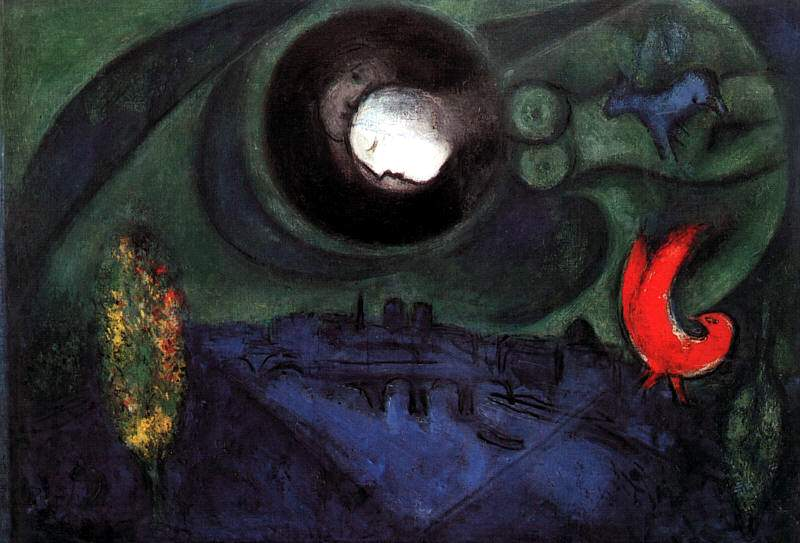
Когда же автор предается воспоминаниям, коровы возносятся на небо, играя на скрипках. Словом, везде и всегда они наполняют землю, витают в небе, участвуют во всех важнейших событиях жизни. Листая страницы книги «Моя жизнь», мы находим некую разгадку. Вот поразительное описание деятельности дедушки из Лиозно, по роду занятий – мясника. «Ночью во сне мне чудилось, что не только запах, но и сами коровы здесь, в доме: чудесное стадо, умирающее на полу и возносящееся на небо. Коров убивали жестоко. Но я все прощал. Распятые, точно мученики, шкуры смиренно обращали к небу-потолку молитву об отпущении грехов убийцам». Быть может, это символ смиренной жертвы, которую его народ принесет в страшном ХХ веке в огне Холокоста?
Тема единства мира в любви, постепенно возникающая, после войны, становится доминирующей в творчестве Шагала. Она выливается в грандиозную библейскую эпопею. Не будет преувеличением сказать, что Шагал – истинный пророк ХХ века. Его живопись становится свободной и светоносной. В ней появляется «неслыханная простота», о которой писал Пастернак. Одухотворяя земные предметы, он естественно пришел к Небу, так как «стран много, а небо едино». Библейские пророки – вот его истинные друзья и собеседники. «Пророк Исайя» — раскаленное докрасна пространство картины заставляет толпу в священном страхе забиться в нижний угол картины и созерцать оттуда, как шестикрылый серафим влагает в уста коленопреклоненному Исайе «угль, пылающий огнем». А за крыльями серафима проступает распятый Мессия. За спиной Исайи, осененные белым ангелом, оживают пророчества будущего, когда «Волк и ягненок будут пастись вместе, и лев, как вол, будет есть солому, а для змея прах будет пищею: они не будут причинять зла и вреда на всей святой горе моей» (Ис 65:25). Исайя тяжело склонился и, наверное, напоминает отца автора, грузчика, уставшего за долгий день тяжкого труда.
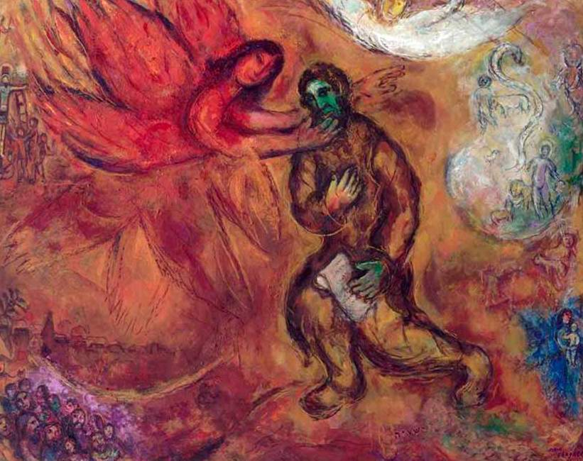
Вот «Башня царя Давида» (1968-1971 гг.). Псалмопевец играет на гуслях, его лицо светится. Внизу у ног крошечная козочка – прототип Вирсавии — женщины, которую в белоснежном облаке он обнимает, и земная любовь, смешанная с покаянными слезами, освящает и вдохновляет его поэзию. Мы же все в толпе слушателей, внимающих его песням и возносящих к небу свои молитвы.
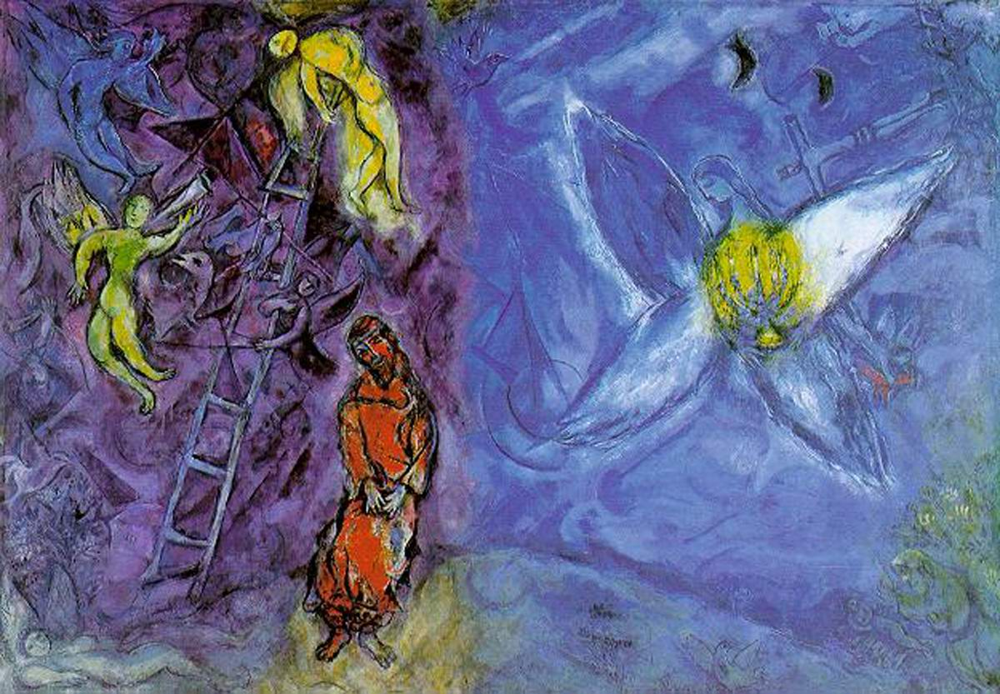
«Лествица Иакова» (1973 г.) устремлена в небо, конечно же, над витебскими хибарками. Сам Иаков погружен в сон тут же, прямо на улице местечка, а ангелы вспархивают и разлетаются по небу, встречая и благословляя и автора, и его любимую коровку. «Моисей со скрижалями и золотой телец» (1976 г.) грозно возвышается на горе Синай, а слева – иудеи, пляшущие вокруг золотого тельца и предающиеся разврату. Любимое Шагалом небо – в клубах то ли дыма, то ли грозовых туч, сквозь которые светится раскаленное солнце. И «Песнь песней» (1974 г.), где на иконописном багряном фоне обнаженные влюбленные в потоке света, льющегося с небес, опираются на фантастическую птицу. Быть может, это Феникс, всегда возрождающийся из пепла. И опять, как всегда, мы, люди в толпе – свидетели чуда. А на небесах – псалмопевец (как же без него!), воспевающий земную и небесную любовь. Нельзя не сказать и о «Святом Семействе» (1975-1976 гг.), где Мать с Младенцем сидит на фоне погруженного в сумерки местечка, а Иосиф спускается с неба, обеими руками благословляя и охраняя Их. И светящаяся коровка тоже не забыта. Поразительно цветущее «Древо Иессеево» (1975 г.), где все библейское родословие венчается Распятием, которое, как и Богородица с Младенцем, есть удивительные плоды древа. Невозможно описать всю грандиозную Библейскую эпопею. А ведь еще были витражи для многих европейских соборов!
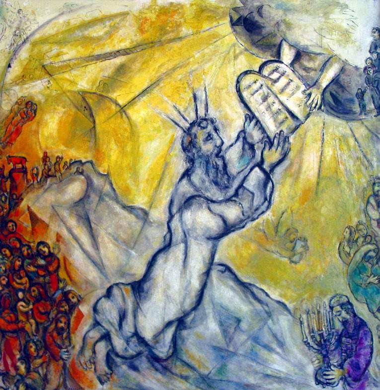
Шагал как будто возвращает нас из нашего рационалистического времени во времена Средневековья, когда Бог и Небо были ближе к людям. Нам это жизненно необходимо, так как для нас религия стала лишь частью культуры, в одном ряду с наукой, спортом, психологией. Наша жизнь лишилась духовного измерения, всякого христианского ориентира и, как пишет Оливье Клеман, «сейчас в мире господствует эмпиризм видимого и субъективизм удовольствия, а также вульгаризированный психоанализ, претендующий на обладание ключом ко всем проблемам» [12]. Шагал принес и оживил в сознании людей смысл инобытия, и мы острее понимаем неразрывную связь повседневности с Богом. И то доброе и чистое, о чем просто, без назиданий, говорит нам Евангелие, воплотил в своих холстах, витражах и графике великий наш современник, гениальный художник, истинный пророк Марк Шагал.
читайте также статью "ИИСУС в еврейском искусстве"
Список использованных источников.
1. М. Бессонова. Мастер из Витебска. — М.: Моск. художник, 1989.
2. Н. Апчинская. Послесловие к книге М. Шагала «Моя жизнь». – М.: Эллис Лак, 1994.
3. Там же.
4. В Соловьев. Еврейство и христианский вопрос. – Берлин, 1921. – с. 21.
5. В. Зелинский. Приношение Богу, к отдаленному истоку или Секрет поэзии / «Истина и жизнь». № 6.2005.
6. О. Клеман. Отблески света. – М.: ББИ им. Ап. Анрея, 2004.
7. М. Шагал. Моя жизнь. – М.: Эллис Лак, 1994.
8. Там же.
9. Там же.
10. Якимович. Магическая вселенная.
11. Там же.
см. также фильм "Послание от Марка Шагала"